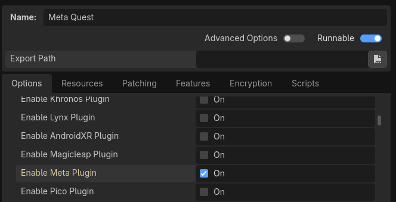
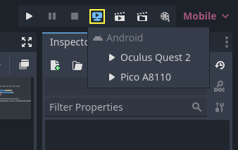

Triển khai lên Android
Thiết lập
Hầu hết các headset độc lập chạy trên Android và hỗ trợ OpenXR đang dần có mặt trên các nền tảng này.
Trước khi làm theo các hướng dẫn dành riêng cho OpenXR ở đây, trước tiên bạn cần thiết lập hệ thống để xuất (export) sang Android nói chung, bao gồm:
Cài đặt OpenJDK 17
Cài đặt Android Studio
Cấu hình vị trí của Android SDK trong Godot
Xem Xuất cho Android để biết đầy đủ chi tiết, và quay lại đây khi bạn đã hoàn tất các bước này.
Cảnh báo
Mặc dù renderer Mobile Vulkan có nhiều tối ưu hóa nhắm đến thiết bị di động, chúng tôi vẫn đang khắc phục các vấn đề còn tồn tại. Hiện tại, bạn rất nên dùng renderer compatibility (OpenGL) khi nhắm đến các thiết bị XR chạy Android.
Build Android bằng Gradle
Ghi chú
Ban đầu, hỗ trợ chính thức cho nền tảng Android chưa được thêm vào đặc tả OpenXR, dẫn đến việc nhiều nhà sản xuất tự tạo loader riêng để đưa OpenXR lên headset của họ. Dù về lâu dài, kỳ vọng là tất cả nhà sản xuất sẽ dùng loader OpenXR chính thức, hiện tại các loader này vẫn cần được thêm vào dự án của bạn.
Để đưa loader OpenXR riêng của nhà sản xuất vào dự án, bạn cần thiết lập Android build bằng gradle.
Chọn Install Android Build Template... từ menu Project:

Thao tác này sẽ tạo một thư mục tên android bên trong dự án, chứa tất cả các file runtime cần thiết trên Android. Giờ bạn có thể tùy chỉnh bản cài đặt này. Godot sẽ không hiển thị thư mục này trong trình chỉnh sửa, nhưng bạn có thể tìm thấy nó bằng trình duyệt file.
Bạn có thể đọc thêm về gradle build tại đây: Build Gradle cho Android.
Cài đặt plugin của các nhà cung cấp
Bạn có thể tải vendors plugin từ Asset Store, hãy tìm "OpenXR vendors".

Bạn sẽ thấy các file đã cài nằm trong thư mục addons. Ngoài ra, bạn có thể cài vendors plugin thủ công bằng cách tải nó từ trang release tại đây. Bạn cần sao chép thư mục assets/addons/godotopenxrvendors từ file zip vào thư mục addons của dự án.
Bạn có thể tìm repository chính của vendors plugin tại đây.
Ghi chú
Từ Godot 4.6 trở đi, vendor plugin trở thành plugin tùy chọn nhưng được khuyên dùng. Godot có thể xuất trực tiếp sang hầu hết các thiết bị tương thích Android. Điều này hữu ích cho các dự án demo và bài hướng dẫn, khi một file APK duy nhất có thể được triển khai lên nhiều thiết bị. Vendor plugin mở khóa các triển khai và cài đặt riêng của từng nhà sản xuất, và có thể là bắt buộc để phát hành trên các cửa hàng ứng dụng.
Tạo các preset xuất
Bạn cần thiết lập một export preset riêng cho từng thiết bị, vì mỗi thiết bị cần có loader riêng đi kèm.
Mở Project và chọn Export... Nhấn Add.. và chọn Android. Tiếp theo, đổi tên export preset theo thiết bị bạn đang thiết lập, chẳng hạn Meta Quest. Và bật Use Gradle Build. Tiếp theo, đổi XR Mode thành OpenXR. Nếu bạn muốn dùng one-click deploy (mô tả bên dưới), hãy đảm bảo Runnable đã được bật.
Nếu đã cài vendor plugin, bạn cũng sẽ thấy các mục cho những headset khác nhau trong XR Features. Hãy chọn mục cho headset của bạn nếu có. Nếu không, hãy bật Khronos plugin.

Cuộn xuống cuối danh sách, bạn sẽ thấy các phần tính năng XR bổ sung; hiện chỉ có Meta XR Features, Pico XR Features, Magicleap XR Features và Khronos XR Features cho HTC. Bạn cần chọn các cài đặt phù hợp nếu muốn dùng các tính năng này.
Chạy trên thiết bị từ trình chỉnh sửa Godot
Nếu bạn đã thiết lập cài đặt export như mô tả ở trên, và headset đã được kết nối với máy tính và nhận diện đúng, bạn có thể khởi chạy trực tiếp từ trình chỉnh sửa Godot bằng Triển khai một cú nhấp:

Với một số thiết bị trên một số nền tảng, bạn có thể cần thực hiện thêm vài bước để thiết bị được nhận diện đúng, vì vậy hãy nhớ xem tài liệu dành cho nhà phát triển của nhà sản xuất headset.
Ví dụ, với Meta Quest 2, bạn cần bật chế độ nhà phát triển trên headset, và nếu dùng Windows, bạn cần cài driver ADB đặc biệt. Xem tài liệu chính thức dành cho nhà phát triển Meta Quest để biết thêm chi tiết.
Nếu gặp vấn đề với one-click deploy, hãy xem phần Khắc phục sự cố.